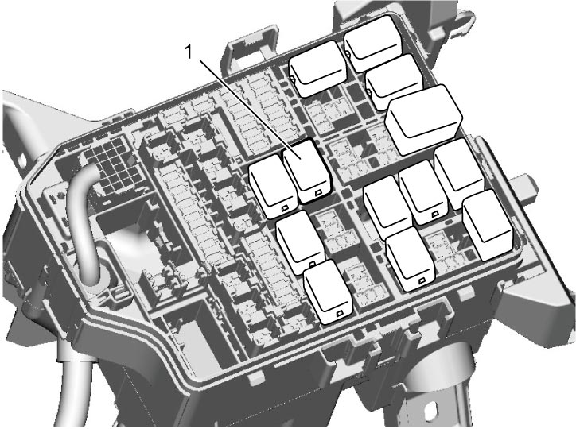

1G
| Fuel Pressure Relief Procedure |
NOTICE:
Performing this procedure when the engine is still hot can damage the catalyst.
Wait until the engine has cooled down before performing this procedure.
1)Check that engine is cold.
2)For M/T model, place gear shift lever in “Neutral”, apply parking brake and block drive wheels.
For A/T model, place select lever in “P”, apply parking brake and block drive wheels.
For A/T model, place select lever in “P”, apply parking brake and block drive wheels.
3)Remove fuel pump relay (1) from individual circuit fuse box No.1.
4)Remove fuel filler cap to release fuel vapor pressure from fuel tank, and then reinstall fuel filler cap.
5)Start engine and run it until engine stops for lack of fuel. Repeat cranking engine 2 – 3 times for about 3 seconds each time to dissipate fuel pressure in lines. Fuel connections are now safe for servicing.
6)After servicing, install fuel pump relay to individual circuit fuse box No.1 and install individual circuit fuse box No.1 cover.


 "Expand image")